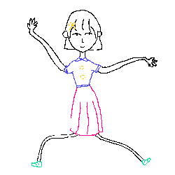
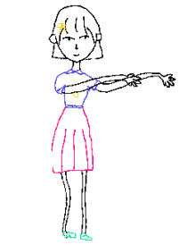
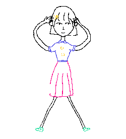

Procedure: 1. Please open this page in Internet Explorer mode. 2. If you meet the warning "Internet Explorer has restricted this page from running scripts or ActiveX controls", please click button "Allow blocked content". 3. First click any Animation button you want. If you meet the warning "ActiveX controls on this page may not be safe to interact with other parts of this page. Do you want to allow this interaction?", please click button "Yes". 4. Now you will see a window appear, just like the right picture. 5. Please wait for the window to disappear (this may take about 2 minutes). Then click button "See the animation!". Notice: If you want to use the same drawing to generate the second or third animation, please move "texture.png" from "GiveDrawingLife/examples/characters/char_girl/" to the local "Download" folder of your computer before you click the Animation buttons.
  